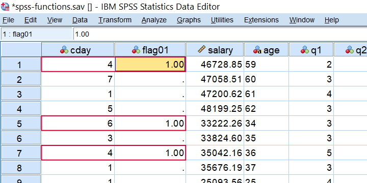
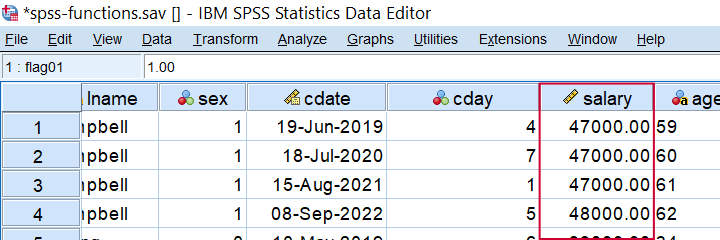
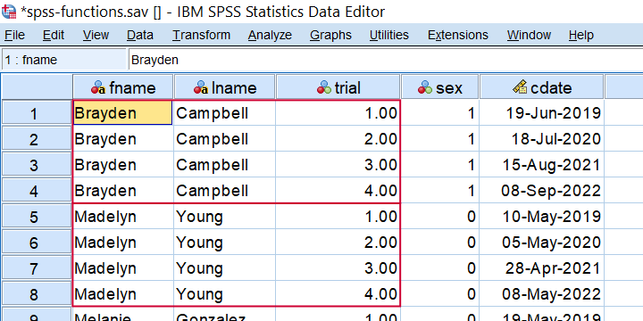
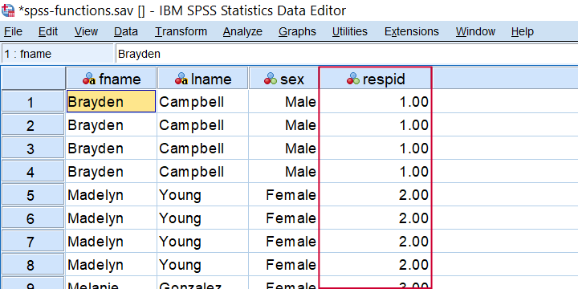
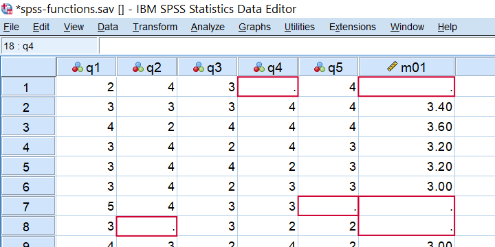
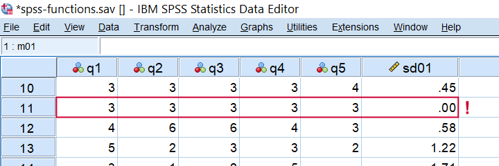
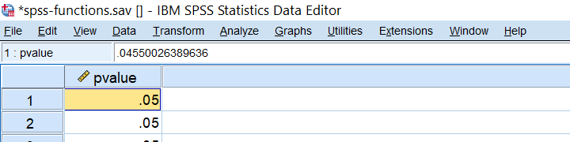
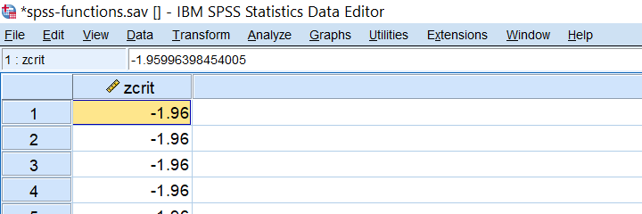
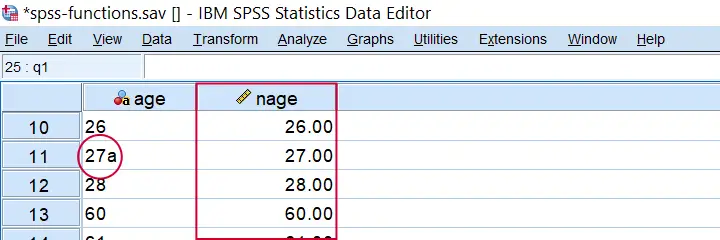
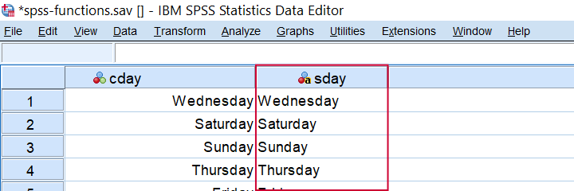

SPSS 操作符和函数快速概览
作者：Ruben Geert van den Berg，发表于 SPSS Blog
下表提供了 SPSS 中函数和操作符的快速概览，按类型（数值型、字符串型等）排序。 表格下方详细介绍了某些不太常见的函数，并提供了示例。
| 类型 | 函数 | 描述 | 示例 |
|---|---|---|---|
| 比较 | = (或 EQ) | 等于 | if(var01 = 0) var02 = 1. |
| 比较 | <> (或 NE) | 不等于 | if(var01 <> 0) var02 = 1. |
| 比较 | < (或 LT) | 小于 | if(var01 < 0) var02 = 1. |
| 比较 | <= (或 LE) | 至多 | if(var01 <= 0) var02 = 1. |
| 比较 | > (或 GT) | 大于 | if(var01 > 0) var02 = 1. |
| 比较 | >= (或 GE) | 至少 | if(var01 >= 0) var02 = 1. |
| 比较 | RANGE | 在范围内 | if(range(score,0,20)) grp01 = 1. |
| 比较 | ANY | 第一个值是否在第二个、第三个…值之中？ | if(any(nation,1,3,5)) flag01 = 1. |
| 逻辑 | & (或 AND) | 所有参数都为真？ | if(sex = 0 & score >= 100) grp01 = 1. |
| 逻辑 | | (或 OR) | 至少 1 个参数为真？ | if(sex = 0 | score <= 90) grp01 = 1. |
| 逻辑 | NOT | 参数不为真 | select if(not(missing(score))). |
| 数值型 | + | 加法 | compute sum01 = var01 + var02. |
| 数值型 | - | 减法 | compute dif01 = var01 - var02. |
| 数值型 | * | 乘法 | compute revenue = sales * price. |
| 数值型 | / | 除法 | compute avg01 = sum01 / trials. |
| 数值型 | ** | 幂运算 | compute square01 = var01**2. |
| 数值型 | SQRT | 平方根 | compute root01 = sqrt(var01). |
| 数值型 | RND | 四舍五入 | compute score = rnd(reactime). |
| 数值型 | MOD | 取模函数 (Modulo Function) | compute cntr = mod(id,4). |
| 数值型 | TRUNC | 截断 | compute score = trunc(reactime). |
| 数值型 | ABS | 绝对值 | compute abs01 = abs(score). |
| 数值型 | EXP | 指数函数 (Exponential Function) | compute escore = exp(score). |
| 数值型 | LN | 自然对数 | compute lnscore = ln(score). |
| 统计 | MIN | 变量中的最小值 | compute min01 = min(var01 to var10). |
| 统计 | MAX | 变量中的最大值 | compute max01 = max(var01 to var10). |
| 统计 | SUM | 变量之和 | compute total = sum(var01 to var10). |
| 统计 | MEAN | 变量的平均值 | compute m01 = mean(var01 to var10). |
| 统计 | MEDIAN | 变量的中位数 | compute me01 = median(var01 to var10). |
| 统计 | VARIANCE | 变量的方差 | compute vnc01 = variance(var01 to var10). |
| 统计 | SD | 变量的标准差 | compute sd01 = sd(var01 to var10). |
| 缺失值 | MISSING | 系统或用户缺失值 | select if(missing(score)). |
| 缺失值 | SYSMIS | 系统缺失值 | select if(not(sysmis(score))). |
| 缺失值 | NMISS | 变量中缺失值的数量 | compute mis01 = nmiss(v01 to v10). |
| 缺失值 | NVALID | 变量中有效值的数量 | compute val01 = nvalid(v01 to v10). |
| 字符串型 | LOWER | 转换为小写 | compute sku = lower(sku). |
| 字符串型 | UPCASE | 转换为大写 | compute sku = upcase(sku). |
| 字符串型 | CHAR.LENGTH | 字符串中的字符数 | compute len01 = char.length(firstname). |
| 字符串型 | CHAR.INDEX | 子字符串首次出现的位置 | compute pos01 = char.index('banana','a'). |
| 字符串型 | CHAR.RINDEX | 子字符串最后一次出现的位置 | compute pos02 = char.rindex('banana','a'). |
| 字符串型 | CHAR.SUBSTR | 提取子字符串 | compute firstchar = char.substr(name,1,1). |
| 字符串型 | CONCAT | 连接字符串 | compute name = concat(fname,' ',lname). |
| 字符串型 | REPLACE | 替换子字符串 | compute str01 = replace('dog','g','t'). |
| 字符串型 | RTRIM | 删除字符串右侧的空格 | compute str02 = rtrim(str02). |
| 字符串型 | LTRIM | 删除字符串左侧的空格 | compute str03 = ltrim(str03). |
| 日期 | DATE.DMY | 将日、月、年转换为日期 | compute mydate = date.dmy(31,1,2024). |
| 日期 | DATEDIFF | 计算日期之间的时间差（以选择的时间单位为准） | compute age = datediff(datevar02,datevar01,'years'). |
| 日期 | DATESUM | 向日期添加时间单位 | compute followup = datesum(datevar01,100,'days'). |
| 日期 | XDATE | 从日期中提取日期组成部分 | compute byear = xdate.year(bdate). |
| 时间 | TIME.HMS | 将时、分、秒转换为时间 | compute time01 = time.hms(17,45,12). |
| 分布 | CDF | 累积概率分布或密度函数 | compute pvalue = cdf.normal(-1.96,0,1). |
| 分布 | IDF | 逆概率分布或密度函数 | compute zvalue95 = idf.normal(.025,0,1). |
| 分布 | 概率分布或密度函数 | compute prob = pdf.binom(0,10,.5). |
|
| 分布 | RV | 从指定的概率分布或密度函数中抽取（伪）随机数 | compute rand01 = rv.uniform(0,1). |
| 其他 | LAG | 从前一个个案中检索值 | compute prev = lag(varname). |
| 其他 | NUMBER | 将字符串转换为数值 | compute nvar = number(svar,f3). |
| 其他 | STRING | 将数值转换为字符串 | compute svar = string(nvar,f3). |
| 其他 | VALUELABEL | 将值标签设置为字符串值 | compute svar = valuelabel(nvar). |
SPSS ANY 函数示例
在 SPSS 中，ANY 函数评估第一个值是否在第二个、第三个…值之中。 例如，假设我们想知道完成日期是否是星期一、星期三 或 星期五？ 我们 可以 使用 if(cday = 2 or cday = 4 or cday = 6) flag01 = 1.。 然而，这里一个很好的简写方法是 if(any(cday,2,4,6)) flag01 = 1.。 下面的屏幕截图显示了在 spss-functions.sav 上运行的结果。
 IF(ANY(CDAY,2,4,6)) FLAG01 = 1. 的结果。
作为第二个例子，让我们标记所有在最后 5 个变量中至少得一个 1 分的个案。 这通常通过 COUNT 然后 RECODE 来完成，但一个更短的选择是 if(any(1,q1 to q5)) flag02 = 1.，它检查 值 1 是否在 变量 q1 到 q5 中。
SPSS RND 函数示例
在 SPSS 中，您可以将值 x 四舍五入到某个常数 c，默认情况下 c 为 1。 像这样，
RND(123456.789) = 123457RND(123456.789,10) = 123460并且RND(123456.789,.1) = 123456.8.
因此，要将工资四舍五入到美元，您可以使用 compute salary = rnd(salary).。 或者，使用 compute salary = rnd(salary, **.01** ). 将工资四舍五入到美元 分。 要将工资四舍五入到 千 美元，请使用 compute salary = rnd(salary, **1000** ).，如下面的在 spss-functions.sav 上运行的结果所示。
 COMPUTE SALARY = RND(SALARY,1000). 的结果。
SPSS MOD 函数示例
在 SPSS 中，MOD 是 取模函数 (modulo function) 的缩写，其中 MOD(X,Y) 返回 X 减去 Y 尽可能多次后的余数。 如果每个受访者都有相同数量的试验，这对于创建试验计数器非常方便，如 compute trial = mod(($casenum - 1),4) + 1. 中所示。 在 spss-functions.sav 上运行时，结果如下所示。
 通过 COMPUTE TRIAL = MOD(($CASENUM - 1),4) + 1. 创建的试验计数器。
SPSS TRUNC 函数示例
在 SPSS 中，您可以将值 x 截断（“向下舍入”）到某个常数 c，默认情况下 c 为 1。 像这样，
TRUNC(123456.789) = 123456TRUNC(123456.789,10) = 123450并且TRUNC(123456.789,.1) = 123456.7.
如果每个受访者都有相同数量的试验，则 TRUNC 在创建受访者标识符时非常方便，如 compute respid = trunc(($casenum - 1) / 4) + 1. 中所示。 下面显示了在 spss-functions.sav 上运行的结果。
 COMPUTE RESPID = TRUNC(($CASENUM - 1) / 4) + 1. 的结果。
SPSS MEAN 函数示例
在 SPSS 中，MEAN 非常简单明了，但有两件事你应该知道：首先，如果存在任何 缺失值 (missing values)，那么
\[mean = \frac{sum(valid\;values)}{number\;of\;valid\;values}\]
这一点很重要，因为有效值的数量可能因受访者而异。
其次，您可以使用 MEAN._k_(...) 将 MEAN 限制为最小数量的有效值 k。 因此，对于 spss-functions.sav，compute m01 = mean.5(q1 to q5). 仅计算在这些 5 个变量上没有任何缺失值的个案的平均分数，如下所示。
 COMPUTE M01 = MEAN.5(Q1 TO Q5). 的结果。
SPSS SD 函数示例
在 SPSS 中，SD 计算变量的标准差。 它具有与 MEAN 讨论的相同属性。 SD 在检测 “直线答题者 (straightliners)”（对所有或大多数问题给出相同答案的受访者）时非常方便。 像这样，compute sd01 = sd(q1 to q5). 可以快速完成 spss-functions.sav 的工作。
 使用 COMPUTE SD01 = SD(Q1 TO Q5). 检测直线答题者。
SPSS CDF 函数示例
CDF 是 c umulative (probability) d ensity (or distribution) f unction 的缩写：它返回 \[P(X \le x)\],
给定一些 概率密度函数 (probability density function)。 例如，假设 z 服从标准正态分布，z = -2.0 的双尾 p 值是多少？ 我们可以通过运行 compute pvalue = 2 * cdf.normal(-2,0,1). 来找到答案，如下所示。

SPSS IDF 函数示例
IDF 是 i nverse (probability) d ensity (or distribution) f unction 的缩写：它返回某个选定概率的临界值，给定一个密度函数。 请注意，这正是我们计算 置信区间 (confidence intervals) 时所做的事情。 例如：哪个 z 值具有 .025 的累积概率？ 我们可以通过 compute zcrit = idf.normal(.025,0,1). 来计算，如下所示。

SPSS NUMBER 函数示例
在 SPSS 中，NUMBER 将 字符串变量 (string variable) 转换为（新的）数值变量。 关于 spss-functions.sav，compute nage = number(age,f2). 基于包含年龄的字符串变量创建一个数值年龄变量。
 COMPUTE NAGE = NUMBER(AGE,F2). 的结果。 请注意案例 11 的非法字符。
重要的是，选择 f2 格式会导致 SPSS 忽略除前 2 个字符以外的所有字符。 如果我们选择 f3 代替，如 compute nage = number(age, **f3** ). 中所示，那么 SPSS 会抛出以下警告：
Warning # 1102
An invalid numeric field has been found. The result has been set to the
system-missing value.
Command line: 117 Current case: 11 Current splitfile group: 1
Field contents: ‘27a’
这是因为案例 11 的年龄包含非法字符，导致系统缺失值。 可悲的是，当使用 ALTER TYPE 转换此变量时，此值会从您的数据中消失，没有任何警告或错误。 在我们看来，这确实是 SPSS 中的一个主要愚蠢之处，而且确实非常棘手。
SPSS VALUELABEL 函数示例
VALUELABEL 函数将某个变量的值标签设置为某个字符串变量的值。 下面的语法说明了如何为 spss-functions.sav 执行此操作。
***DECLARE NEW STRING VARIABLE WITH LENGTH 10.
** string sday(a10).
***SET VALUE LABELS FOR CDAY AS VALUES.
** compute sday = valuelabel(cday).
execute.结果
 COMPUTE SDAY = VALUELABEL(CDAY). 的结果。
最终说明
现在老实说，我们对 SPSS 操作符和函数的概述并非 100% 全面。 我确实省略了一些非常罕见的示例，以至于涵盖它们只会使表格混乱，而不会帮助任何人。
如果您有任何问题或意见，请在下面留言。 除此之外：
感谢阅读！